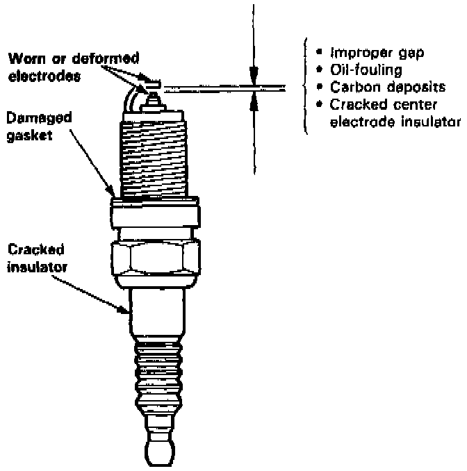
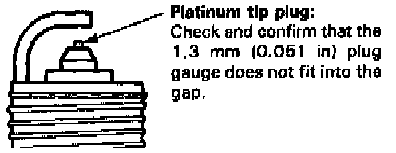
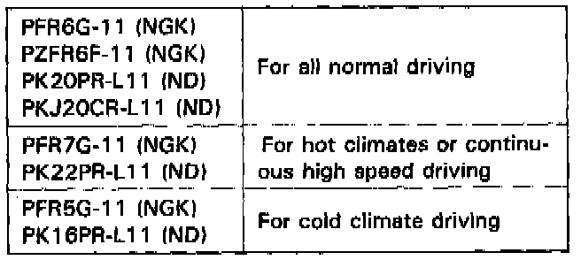

Spark Plug: Testing and Inspection

1. Inspect the electrodes and ceramic insulator for:
Burned or worn electrodes may be caused by:
- Advanced ignition timing
- Loose spark plug
- Too low plug heat range
- Insufficient cooling
Fouled plug may be caused by:
- Retarded ignition timing
- Oil in combustion chamber
- Incorrect spark plug gap
- Too high plug heat range
- Excessive idling/low speed running
- Clogged air cleaner element
- Deteriorated ignition coil

2. Make sure that the 1.3 mm (0.051 in.) plug gauge does not fit into the gap of the platinum tip plug. If the gauge fits into the gap, do not attempt to adjust the side electrode. Replace the plug.
Electrode Gap: 1.1 mm (0.043 in.)
3. Replace the plug at the specified interval, or if the center electrode is rounded as shown below:

Use only the plugs listed above:
4. Apply some anti-seize compound to the plug threads, then screw the plugs into the cylinder head finger tight, and torque them to 18 Nm (1.8 kg-m, 13 lb-ft).